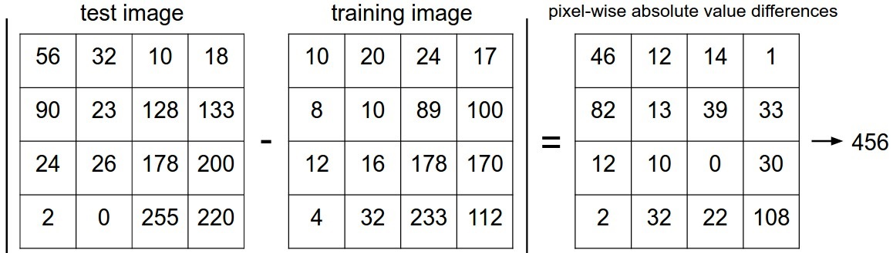
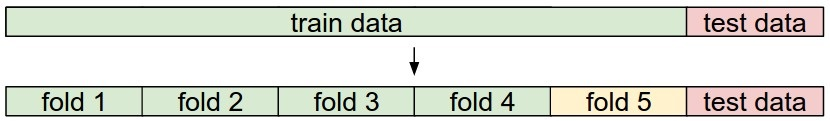

To understand the algorithm let’s consider a problem of image classification, in which we have an image of 32 x 32 x 3 pixel and want to assign a single label from a fixed set of categories.
Nearest Neighbor Classifier
The learning step of nearest neighbor classifier is very simple. It just stores all the dataset to compare with test image.
To predict it takes a test image, compare it to every single one of the training images, and predict the label of the closest training image.
Distance calculation
There are many ways of computing distances between vectors.
L1 distance
To find the distance between two images we may use L1 distance.
In L1 distance we compare the images pixel by pixel and add up all the differences.
$$d_1 (I_1, I2) = \sum{p} \left| I^p_1 - I^p_2 \right|$$

Two images are subtracted elementwise and then all differences are added up to a single number. If two images are identical the result will be zero. But if the images are very different the result will be large.
distances = np.sum(np.abs(self.Xtr - X[i,:]), axis = 1)Implementation
Load the CIFAR-10 data.
The training data $Xtr$ is of [50,000 x 32 x 32 x 3] and a corresponding 1-dimensional array $Ytr$ (of length 50,000) holds the training labels (from 0 to 9)
Xtr, Ytr, Xte, Yte = load_CIFAR10('data/cifar10/')Flatten out all images to be one-dimensional
Xtr_rows = Xtr.reshape(Xtr.shape[0], 32 * 32 * 3) # Xtr_rows becomes 50000 x 3072
Xte_rows = Xte.reshape(Xte.shape[0], 32 * 32 * 3) # Xte_rows becomes 10000 x 3072import numpy as np
class NearestNeighbor(object):
def __init__(self):
pass
def train(self, X, y):
""" X is N x D where each row is an example. Y is 1-dimension of size N """
# the nearest neighbor classifier simply remembers all the training data
self.Xtr = X
self.ytr = y
def predict(self, X):
""" X is N x D where each row is an example we wish to predict label for """
num_test = X.shape[0]
# lets make sure that the output type matches the input type
Ypred = np.zeros(num_test, dtype = self.ytr.dtype)
# loop over all test rows
for i in xrange(num_test):
# find the nearest training image to the i'th test image
# using the L1 distance (sum of absolute value differences)
distances = np.sum(np.abs(self.Xtr - X[i,:]), axis = 1)
min_index = np.argmin(distances) # get the index with smallest distance
Ypred[i] = self.ytr[min_index] # predict the label of the nearest example
return Ypred# create a Nearest Neighbor classifier class
nn = NearestNeighbor()
# train the classifier on the training images and labels
nn.train(Xtr_rows, Ytr)
# predict labels on the test images
Yte_predict = nn.predict(Xte_rows)
# and now evaluate the classification accuracy, which is the average number
# of examples that are correctly predicted (i.e. label matches)
print ('accuracy: {}'.format(np.mean(Yte_predict == Yte) ))L2 distance
L2 distance has the geometric interpretation of computing the euclidean distance between two vectors.
$$d_2 (I_1, I2) = \sqrt{\sum{p} \left( I^p_1 - I^p_2 \right)^2}$$
distances = np.sqrt(np.sum(np.square(self.Xtr - X[i,:]), axis = 1))we could leave out the np.sqrt operation because square root is a monotonic function. Although, it scales the absolute sizes of the distances, it preserves the ordering, so the nearest neighbors with or without it are identical.
L1 vs L2
L1 and L2 distances are equivalently known as L1/L2 norms (of the differences between a pair of images).
The L2 distance is much more unforgiving than the L1 distance when it comes to differences between two vectors. i.e, the L2 distance prefers many medium disagreements to one big one.
k-Nearest Neighbor Classifier
Instead of finding the single closest image in the training set, we will find the top k closest images, and have them vote on the label of the test image.
Intuitively, higher values of k have a smoothing effect that makes the classifier more resistant to outliers.
When k = 1, we recover the Nearest Neighbor classifier.
Hyperparameters
Although Machine Learning algorithms learns paramters (like weights) from training data there are certain parameters which can not be learned, and called hyper-parameters. Infact we need to set the optimam values of hyper-parameters to enable the algorithm to learn best paramters.
k, distance functions (L1 norm, L2 norm, dot products) are the hyperparameters of kNN algorithm.
we should not use the test set for the purpose of tweaking hyperparameters. You should think of the test set as a very precious resource that should ideally never be touched until one time at the very end.
Evaluate on the test set only a single time, at the very end.Validation set
The correct way to set these hyperparameters is to split your training data into two: a training set and a fake test set, which we call validation set.
Split your training set into training set and a validation set. Use validation set to tune all hyperparameters. At the end run a single time on the test set and report performance.
Cross-validation
In cases where the size of your training data (and therefore also the validation data) might be small, it is better to use cross-validation for hyperparameter tuning. Split your data in number of equal folds, leaving one fold for validation train the model on rest of the folds, Repeat this process to select each fold for validation.
For example, in 5-fold cross-validation, we would split the training data into 5 equal folds, use 4 of them for training, and 1 for validation. We would then iterate over which fold is the validation fold, evaluate the performance, and finally average the performance across the different folds.
Cross-validation help reduce noise in estimating which hyperparameters work best.
Cross-validation is computationally expensive. If the dataset is huge people prefer to avoid cross-validation in favor of having a single validation split.
Typical number of folds used in practice are 3-fold, 5-fold or 10-fold cross-validation.

Yellow fold is a validation fold.
Aadvantages
- very simple to implement and understand.
- the classifier takes no time to train, since all that is required is to store and possibly index the training data.
Disadvantages
- requires us to store the entire training set. This is space inefficient because datasets may easily be gigabytes in size.
- Classifying a test image is expensive since it requires a comparison to all training images.
In practice we often care about the test time efficiency much more than the efficiency at training time.
L1 or L2 distances on raw pixel values is not adequate since the distances correlate more strongly with backgrounds and color distributions of images than with their semantic content.
Approximate Nearest Neighbor (ANN)
There are several Approximate Nearest Neighbor (ANN) algorithms and libraries exist that can accelerate the nearest neighbor lookup in a dataset (e.g. FLANN).
These algorithms allow to trade off the correctness of the nearest neighbor retrieval with its space/time complexity during retrieval, and usually rely on a pre-processing/indexing stage that involves building a kdtree, or running the k-means algorithm.
Should use the full training set with the best hyperparameters? The optimal hyperparameters might change if you merge the validation set into training set (since the size of the data would be larger). In practice it is cleaner to not use the validation set in the final classifier and consider it to be burned on estimating the hyperparameters. Evaluate the best model on the test set.
Further Reading
Here are some (optional) links you may find interesting for further reading:
A Few Useful Things to Know about Machine Learning, where especially section 6 is related but the whole paper is a warmly recommended reading.
Recognizing and Learning Object Categories, a short course of object categorization at ICCV 2005.